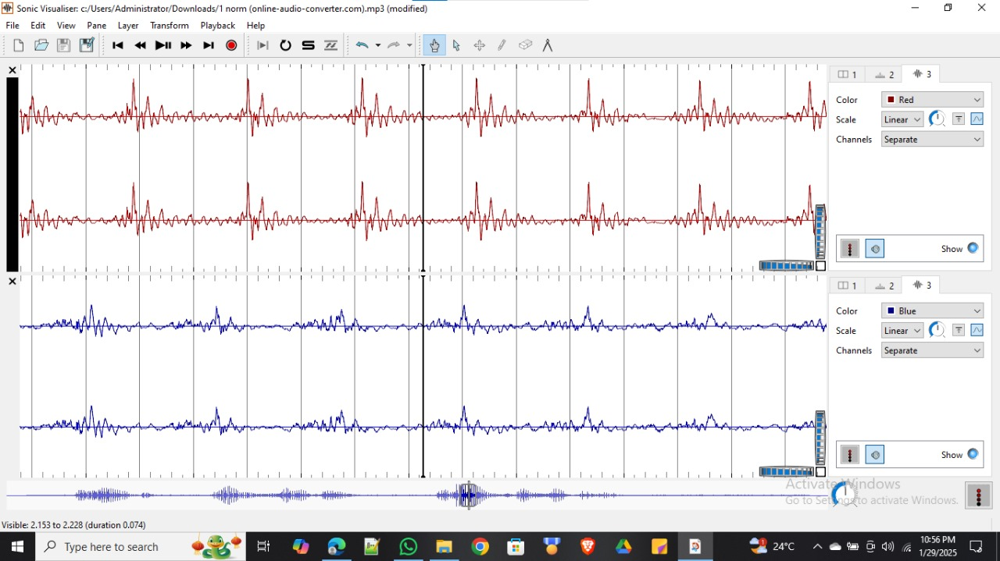
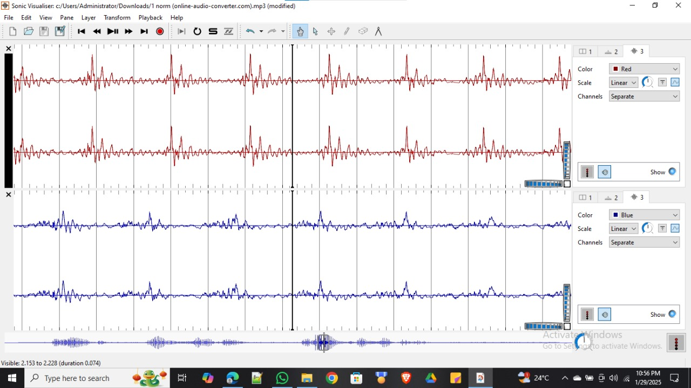

Biomedical Engineer
I am Harikant Prasad Gupta, an undergraduate Biomedical Engineering student at SRM University, Chennai, passionate about merging technology with healthcare. My expertise includes AutoCAD, PCB design, Python, C, MATLAB, COMSOL, Arduino IoT, Machine Learning, Medical Instrumentation, Biosensors and Embedded Systems. I have worked on projects like an Automatic CPAP device, Prosthetic Arm using OpenCV, Electrolarynx, and VR-based medical diagnosis. Additionally, I have completed internships in Machine Learning, Embedded Systems, and Full-Stack Development and served as a coordinator for the Java Full-Stack Developer Internship Program. I aim to work in the medical device industry, focusing on electronics, robotics, and non-invasive healthcare solutions. Currently, I am seeking internship opportunities to gain hands-on experience and contribute to impactful innovations. "OWN YOUR JOURNEY" I believe in taking charge of my growth and making a difference through engineering.
Skills
Experience
Education
Biomedical Instrumentation is the field of engineering that focuses on designing, developing, and maintaining devices and systems used to monitor, diagnose, and treat medical conditions. It integrates principles from electronics, sensors, signal processing, and sciences to create advanced healthcare solutions.
Learn moreMATLAB is a powerful tool for signal processing, widely used in biomedical engineering, communications, audio processing, and control systems. It provides a comprehensive set of functions and toolboxes to analyze, filter, and transform signals efficiently.
Learn more 
